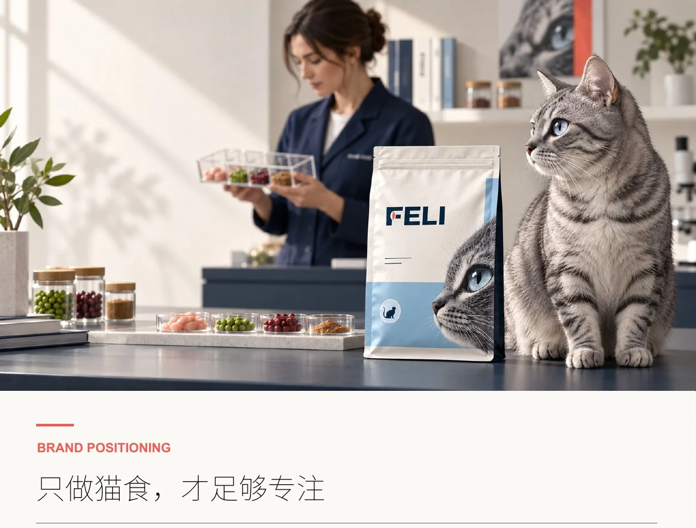
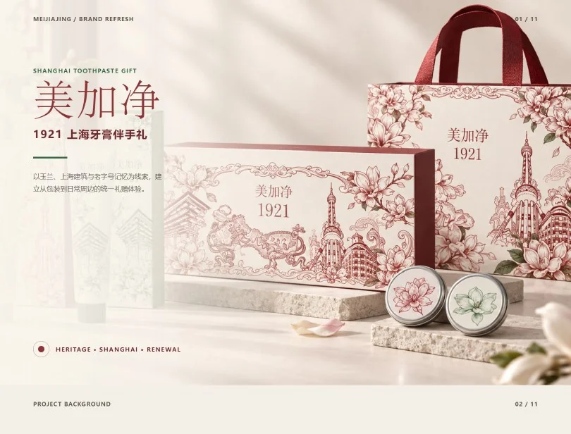
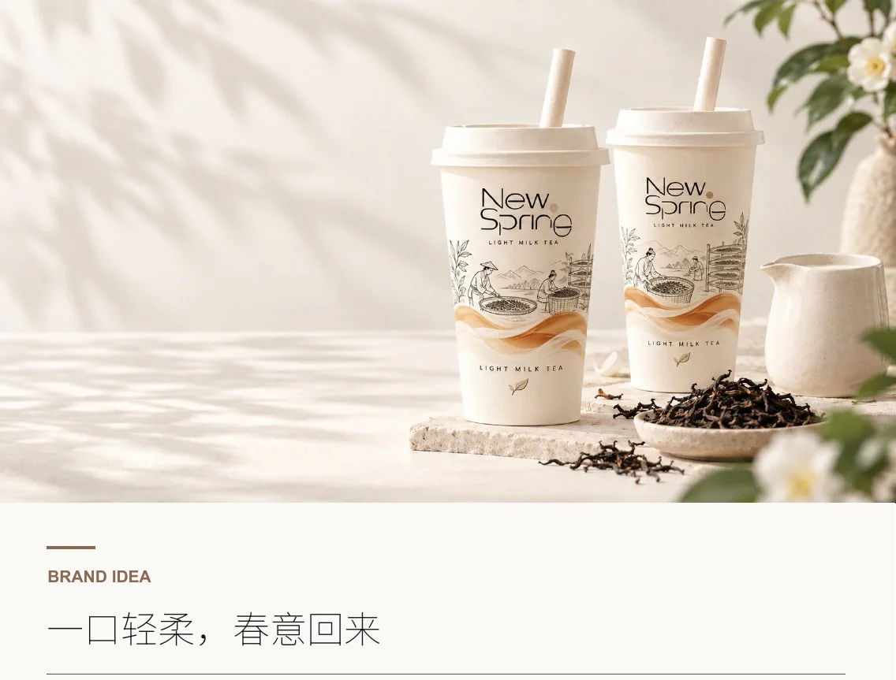
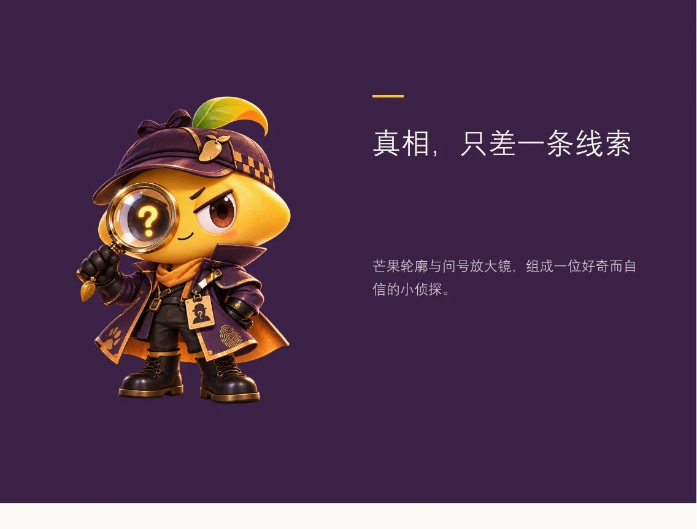
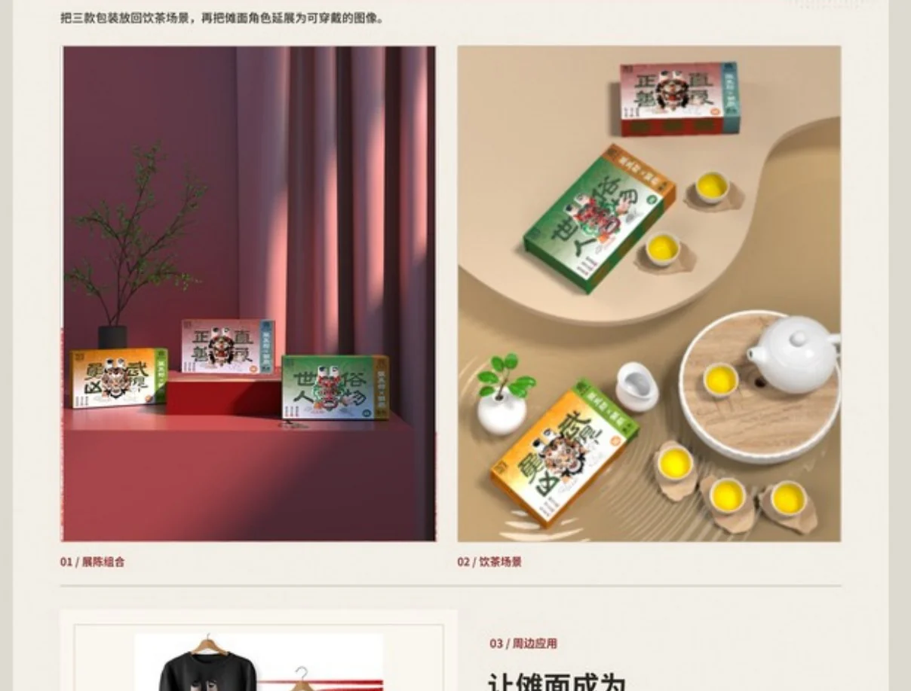

01 / FEATURED PROJECT
BRAND BUILDING / 2026
RIVOTA
溯野
净在途中，自在远行。
为便携式户外净水与补给系统，建立兼具专业感、轻量体验与自然气质的品牌语言。
ZHANG YUECHENG / PORTFOLIO 2026
一名从品牌定位出发的视觉设计师。
我关注一个想法如何成为清晰的视觉语言，再走进包装、角色与真实的使用场景。2027 届视觉传达设计，期待继续把想法做完整。
01 / ABOUT ME
VISUAL DESIGNER
BASED IN CHINA
我是湖南城市学院视觉传达设计专业（中外合作办学）2027 届本科生，求职方向为视觉设计 / 新媒体设计。我的作品横跨品牌建立、IP 形象与文化包装；方法始终是先找到核心概念，再让每个触点说同一种语言。
阅读完整简历02 / SELECTED WORKS
六个项目，从品牌、角色与文化切入。点击图片，进入每个项目的设计过程。
RIVOTA
净在途中，自在远行。
为便携式户外净水与补给系统，建立兼具专业感、轻量体验与自然气质的品牌语言。

02 / BRAND IDENTITY只做猫食，才足够专注。把“懂猫”延伸至系列包装与零售触点。

03 / CULTURAL PACKAGING让日常牙膏成为可以带走的上海记忆，以城市地标连接礼赠体验。

04 / BRAND BUILDING一口轻柔，春意回来。用字标、茶文化插画和暖色建立统一的感受。

05 / CHARACTER DESIGN把芒果轮廓、问号与放大镜组成有故事感的小侦探，延展到动作与物件。

06 / CULTURAL PACKAGING梅山傩面文化与茶礼相遇。以角色、色彩和包装结构让故事进入日常。
03 / MY APPROACH
作品之间的媒介不同，设计逻辑始终相通。
理解对象、场景与要解决的问题，让表达有清楚的方向。
把标识、色彩、图形和角色整理成可持续使用的视觉系统。
让视觉进入包装、空间与内容触点，形成完整的感受。
04 / PRACTICE & EXPERIENCE
从视觉设计到内容发布和现场执行，项目需要在真实环境里成立。
担任学生会主席期间，主导学院公众号视觉定调、拍摄与图文排版；独立或统筹发布 30+ 篇内容，单篇最高阅读量 5,500+，公众号整体阅读量同比提升 45%。
统筹 400+ 人校内招聘会，完成主视觉海报、宣讲 PPT 优化与现场物料制作，并协调现场执行。
获第十一届大学生公益广告大赛特等奖、全国“国青杯”艺术设计比赛一等奖及二等奖；参与达利食品乐虎春季营销策划实践项目。
Photoshop · Illustrator · Figma · InDesign · Animate
05 / CONTACT
欢迎交流视觉设计机会，或进一步了解我的项目思路。